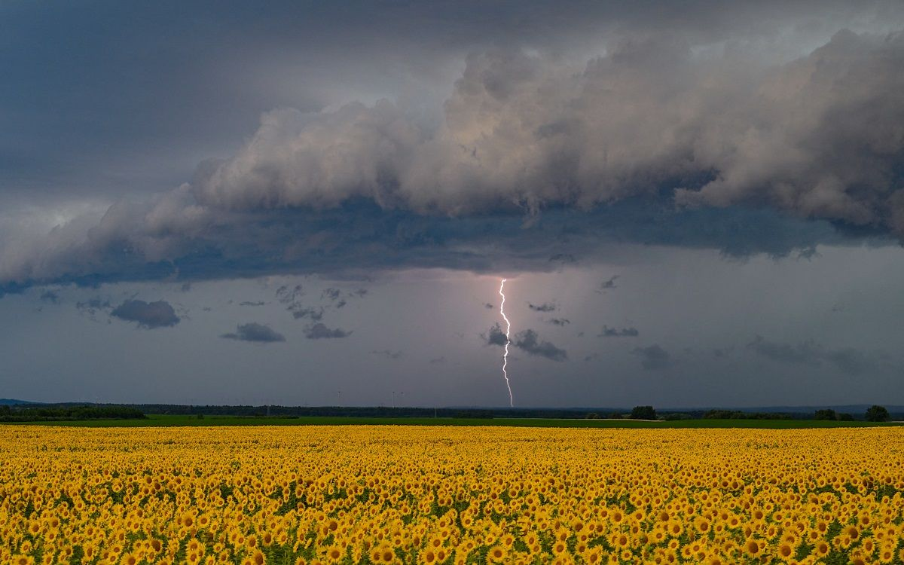

Instabilité
De l'air chaud et humide peut favoriser de puissants mouvements ascendants.
STORMLAB • PHÉNOMÈNES
Un orage est associé à un cumulonimbus et peut produire des éclairs, du tonnerre, de fortes pluies, de la grêle et des vents violents.

OBSERVATION
Plusieurs ingrédients atmosphériques peuvent favoriser le développement d'une cellule orageuse.
01 • FORMATION
De l'air chaud et humide peut favoriser de puissants mouvements ascendants.
L'air chaud monte et se refroidit progressivement.
Le nuage d'orage peut atteindre plusieurs kilomètres d'altitude.
Les interactions entre particules participent à la séparation des charges.
02 • CYCLE DE VIE
Un orage évolue généralement au cours de plusieurs phases.
🌀 SupercellulesSTORMLAB
Observer la météo commence par comprendre ses risques.
🚨 Sécurité